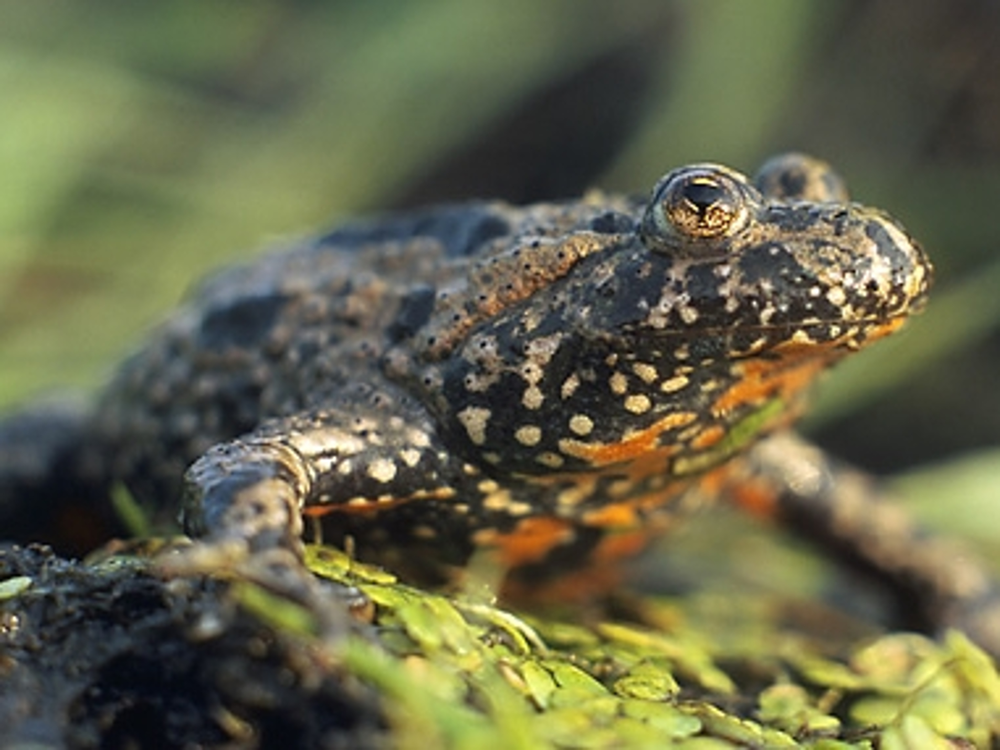

Động vật lưỡng cư


Động vật lưỡng cư (danh pháp khoa học: Amphibia) là một lớp động vật có xương sống máu lạnh. Tất cả các loài lưỡng cư hiện đại đều là phân nhánh Lissamphibia của nhóm lớn Amphibia này. Động vật lưỡng cư phải trải qua quá trình biến thái từ ấu trùng sống dưới nước tới dạng trưởng thành có phổi thở không khí, mặc dù vài loài đã phát triển qua nhiều giai đoạn khác nhau để bảo vệ hoặc bỏ qua giai đoạn ấu trùng ở trong nước dễ gặp nguy hiểm. Da được dùng như cơ quan hô hấp phụ, một số loài kỳ giông và ếch thiếu phổi phụ thuộc hoàn toàn vào da. Động vật lưỡng cư có hình dáng giống bò sát, nhưng bò sát, cùng với chim và động vật có vú, là các loài động vật có màng ối và không cần có nước để sinh sản. Trong những thập kỷ gần đây, đã có sự suy giảm số lượng của nhiều loài lưỡng cư trên toàn cầu.
Các động vật lưỡng cư đầu tiên phát triển trong giai đoạn từ kỷ Devon từ cá vây tay với phổi và vây tay, đây là đặc điểm hữu ích trong việc thích nghi với đất khô. Chúng phát triển đa dạng và trở thành nhóm thống trị trong suốt kỷ Cacbon và kỷ Permi, nhưng sau đó đã được thay thế bằng các loài bò sát và động vật có xương sống khác. Theo thời gian, động vật lưỡng cư đã giảm kích thước và mức độ đa dạng, chỉ để lại lớp hiện đại Lissamphibia.
Ba bộ hiện đại của động vật lưỡng cư là Anura (ếch và cóc), Caudata / Urodela (kỳ giông), và Gymnophiona / Apoda (bộ không chân). Số lượng các loài động vật lưỡng cư được biết đến là khoảng 7.000, trong đó gần 90% là các loài ếch nhái. Các động vật lưỡng cư nhỏ nhất (và có xương sống) trên thế giới là loài ếch ở New Guinea (Paedophryne amauensis) với chiều dài chỉ 7,7 mm. Các động vật lưỡng cư còn tồn tại lớn nhất là kỳ giông khổng lồ Trung Quốc (Andrias davidianus), dài đến 1,8 m, nhưng vẫn còn rất nhỏ so với loài tuyệt chủng Prionosuchus ở kỷ Permi tại Brazil, dài 9 m. Các nghiên cứu về động vật lưỡng cư được gọi là batrachology, trong khi các nghiên cứu của cả hai loài bò sát và lưỡng cư được gọi là herpetology.
Quay về trang chủ